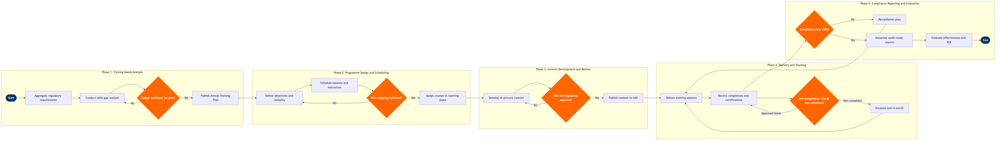

| Step | L4 Step Name | KPI / Target | Pain Point / Risk | Gate |
|---|---|---|---|---|
| 1.1 | Aggregate regulatory & mandatory training requirements | 100% of regulatory training requirements identified and documented before quarter start; zero missed mandates in IOSA audit | FAA, EASA, IATA, and TSA issue requirement updates on different annual cycles; manual reconciliation across portals creates risk of missed mandates — no single regulatory feed integrated into SuccessFactors | |
| 1.2 | Conduct skills gap analysis from performance data | Skills gap assessment completed for ≥95% of active employees annually; report delivered within 15 business days of performance cycle close | SuccessFactors competency model requires manual alignment to airline-specific roles (e.g. load planner, NOC analyst, ramp lead) — generic competency libraries do not map cleanly, creating data quality issues in gap reports | |
| 1.3 | Prioritise and approve Annual Training Plan with budget | Training plan approved and published ≥30 days before programme year start; budget variance vs plan ≤10% at year end | Airlines routinely cut L&D budgets during cost reduction cycles, forcing de-prioritisation of non-mandatory development programmes — no systematic ROI-based prioritisation framework to defend discretionary spend | ⚠ |
| 2.1 | Define learning objectives and delivery modality | Course Design Document reviewed and approved by SME within 10 business days of initiation; 100% of safety-critical courses include knowledge assessment | Simulator availability for ground handling, security procedures, and emergency response is constrained at hub airports — scheduling simulator-based courses conflicts with operational training blocks managed outside the LMS | |
| 2.2 | Schedule sessions and assign instructors or facilitators | Training schedule published ≥21 days before first session; instructor utilisation ≥75%; session cancellation rate <8% | Crew and operations staff scheduling conflicts with irregular shift patterns require manual override in SuccessFactors — the system cannot natively read crew rosters from Jeppesen Crew Management, forcing coordinators to reconcile two systems manually | |
| 2.3 | Assign mandatory courses to employee learning plans | 100% of mandatory course assignments completed within 3 business days of plan approval; zero employees in regulated roles without an active learning plan | Role-based assignment rules break when employees hold dual positions (e.g. part-time ground agent and check-in agent) — SuccessFactors assigns duplicate curricula generating confusion and inflated non-completion statistics | ⚠ |
| 3.1 | Develop or procure course content | First draft delivered within 15 business days for standard module; IATA DGR annual update content delivered by 15 November each year for January 1 effective date | IATA Dangerous Goods Regulations update annually effective January 1 — content must be revised, reviewed, and republished before year-end; production timelines frequently slip, exposing the airline to regulatory non-compliance in early January | |
| 3.2 | Conduct SME, legal, and regulatory review of content | SME review cycle completed within 10 business days; maximum 2 review iterations before escalation; 0 regulatory accuracy findings post-publish | Safety, Security, Legal, and Compliance must all sign off on regulated content (SMS, security awareness, DGR) — parallel review is not natively supported in SharePoint, causing sequential bottlenecks that extend review cycles to 4+ weeks | ⚠ |
| 3.3 | Publish approved content to LMS with version control | Content published to LMS within 3 business days of final approval; zero broken SCORM packages at publish verified by smoke test; prior version archived within 24 hours | SuccessFactors Learning SCORM player has known compatibility issues with Articulate Storyline 360 output — testing is required for every new module; intermittent xAPI completion tracking failures result in learners receiving no credit despite completing the course | |
| 4.1 | Deliver training via eLearning, ILT, or virtual session | ILT and virtual session attendance rate ≥90%; eLearning completion rate ≥85% within assigned window; assessment pass rate ≥80% on first attempt for safety-critical courses | Ops, ramp, and ground staff have limited computer access during shifts — eLearning completion rates for front-line employees are significantly lower (≈55%) than corporate staff; SAP SuccessFactors mobile app experience is poor, limiting shift-based self-paced completion | |
| 4.2 | Record and validate completions and certification expiry | Completion records updated in LMS within 24 hours of session end; 100% of regulated certifications tracked with accurate expiry dates; zero missing records identified in IOSA audit | Simulator, hands-on safety drills, and recurrent training sessions rely on paper attendance rosters that require manual data entry into SuccessFactors — transcription errors in certification dates create compliance audit risk; no digital signature capture for paper-based sessions | |
| 4.3 | Identify, classify, and escalate non-completions | Mandatory training overdue rate <5% at any point in time; escalation triggered within 2 business days of due date breach; re-enrollment completed within 5 business days | Automated escalation rules in SuccessFactors cannot distinguish between non-completion due to approved leave, LOA, or medical absence versus genuine non-compliance — over-escalation creates manager noise and erodes trust in the compliance reporting process | ⚠ |
| 5.1 | Generate regulatory compliance training reports for audit | Compliance reporting available within 5 business days of period close; 0 findings related to training records in FAA, TSA, or IATA IOSA audits; mandatory training completion rate ≥98% across all regulated roles | IATA IOSA audits require evidence of training completion by role across all regulated functions — standard SuccessFactors reports are insufficient for multi-regulator submissions; custom report configuration is required for each audit cycle and is not maintained between audits | ⚠ |
| 5.2 | Evaluate training effectiveness and calculate ROI | Post-training satisfaction score (L1) ≥4.0 out of 5.0; knowledge retention test pass rate (L2) ≥80%; L3 behaviour change measurement completed for all leadership and safety programmes within 90 days of delivery | Kirkpatrick L3/L4 effectiveness measurement requires correlation of training completion data with operational performance metrics (on-time rates, safety incident frequency, customer satisfaction scores) — data resides in SuccessFactors, SITA AMS, safety management databases, and AWS Redshift with no automated linkage, making ROI calculation manual and time-consuming |